Nhà tre tầm vông uốn cong đang trở thành điểm nhấn của nhiều quán cafe, nhà hàng và spa nghỉ dưỡng ở Nha Trang. Những mái vòm mềm như sóng biển, những cột tre vươn lên như tán cây giúp công trình vừa mát, vừa đẹp tự nhiên, lại khác hẳn những không gian bê tông quen thuộc.
Câu hỏi khách hàng đặt ra nhiều nhất vẫn là: "Tre uốn cong như vậy có chắc không, đặt sát biển có bền không?" Câu trả lời nằm ở cách chọn tre, cách xử lý tre và tay nghề dựng khung.
Trong bài này, Tre Việt Building chia sẻ dự án thi công quán cafe tre tầm vông uốn cong tại Spa Amiana Nha Trang: từ ý tưởng, cách uốn và ghép khung tre tại công trình, đến không gian spa trần tre, kèm các mẫu quán cafe tre uốn cong, chi phí tham khảo và những lưu ý trước khi thi công.
Nhà Tre Tầm Vông Uốn Cong Là Gì?
Nhà tre uốn cong là công trình có cột trụ làm từ các bó tre, tầm vông liên kết với nhau để tạo độ vững. Phần khung mái dùng những cây tre có độ dẻo cao, uốn cong thành mái vòm với kiểu dáng độc đáo, không công trình nào hoàn toàn giống công trình nào. Phần mái lợp lá có độ bền cao, lợp khít để chịu nắng mưa tốt.
Tầm vông là loại tre đặc ruột hơn, thân thẳng, cứng và dẻo dai. Khi được xử lý đúng kỹ thuật, tầm vông chịu được uốn tạo hình mà vẫn giữ khả năng chịu lực, nên rất hợp với các công trình vòm, kén, mái lượn.
Tùy quy mô và mục đích sử dụng, nhà tre uốn cong thường dùng một trong bốn kiểu kết cấu:
- Kết cấu khung: các khung giống nhau lặp lại, hợp với không gian dưới 15m như quán cafe, nhà hàng, phòng hội nghị.
- Kết cấu vì kèo: chịu lực tốt, tạo nét riêng cho nội thất, phù hợp công trình vừa và nhỏ.
- Kết cấu đan lưới: giá trị thẩm mỹ cao, thời gian thi công lâu hơn.
- Kết cấu hỗn hợp: kết hợp nhiều dạng lưới phức tạp, dành cho không gian rộng ở resort, biệt thự.
Xem thêm các mẫu khác trong dự án thiết kế thi công nhà tre uốn cong của Tre Việt Building.
Dự Án Quán Cafe Tre Uốn Cong Tại Spa Amiana Nha Trang
Quán cafe của Spa Amiana được thiết kế theo dạng nhà tre bán lộ thiên: mái dốc lợp lá, bên dưới là hệ khung vì bằng tre tầm vông uốn cong. Mỗi cột tre bó lại từ nhiều cây tầm vông, phía trên tỏa ra như tán cây để đỡ mái, tạo một không gian thoáng, đón gió biển và bóng mát suốt ngày.
Bố cục lấy cảm hứng từ những quầy bar tre ven biển nổi tiếng: một khối tường đá phía sau chứa quầy bar, kho và khu vệ sinh, đồng thời làm điểm tựa cho mái tre; phía trước là khoảng ngồi mở hoàn toàn ra cảnh quan.
- 01

Mái dốc lợp lá, mở ra hồ bơi
- 02

Khung tre lên đèn lúc hoàng hôn
- 03

Cột tre bó, uốn tỏa như tán cây
- 04

Chi tiết liên kết khung vì tre
- 05

Mặt bằng: quầy bar, kho, WC, khoảng ngồi
Uốn và ghép khung tầm vông trước khi lắp dựng
Điểm khó nhất của công trình là hệ khung vì cong. Thay vì uốn từng cây trên cao, đội thợ Tre Việt Building uốn tầm vông, bó thành cột và ghép hoàn chỉnh từng khung vì ngay trên mặt đất. Khi các khung đã đúng hình, mới đưa lên lắp dựng và liên kết với nhau. Cách làm này giúp đường cong đều, mối nối chắc và rút ngắn thời gian thi công tại chỗ.
- 01

Khung vì tầm vông uốn sẵn trên mặt đất
- 02

Thợ bó, ghép tre tại bãi thi công
- 03

Bó cột tầm vông uốn cong, chân có bản mã thép
- 04

Khung vì uốn tỏa ghép hoàn chỉnh
Không Gian Spa Amiana: Trần Tre Và Phòng Trị Liệu "Kén Tre"
Amiana là thương hiệu nghỉ dưỡng cao cấp tại Khánh Hòa, gồm Amiana Resort Nha Trang ven vịnh Nha Trang và Amiana Resort Cam Ranh trên bãi Dài, phía nam thành phố. Bên cạnh quán cafe, Tre Việt Building được tin tưởng thi công hệ trần và các phòng trị liệu bằng tre tầm vông uốn cong cho khu spa.
Ý tưởng chủ đạo là những "kén tre": mỗi phòng trị liệu là một vòm tầm vông cong tròn, mặt trước mở ra hồ sen, mái phủ lớp lá dày bên ngoài. Bên trong, các cây tầm vông xếp sát nhau thành những vòng cung liên tục, ánh sáng len qua khe tre tạo cảm giác an yên đúng tinh thần thư giãn của một spa ven biển.
Ở sảnh đón và hành lang, trần tre tầm vông xếp sát nhau, kết hợp đèn tre và những đường cong gợi hình ảnh sóng vỗ, nối liền mạch với các phòng kén ngoài hồ.
- 01
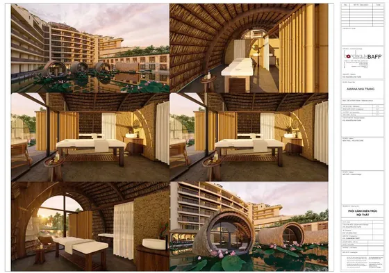
Bản vẽ phối cảnh phòng kén tre bên hồ sen
- 02
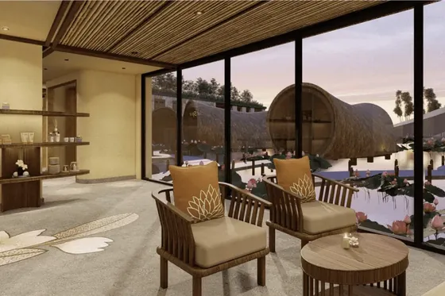
Sảnh chờ nhìn ra dãy kén tre trên hồ
- 03
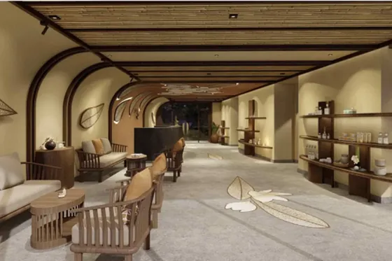
Sảnh đón với trần tre uốn cong
- 04
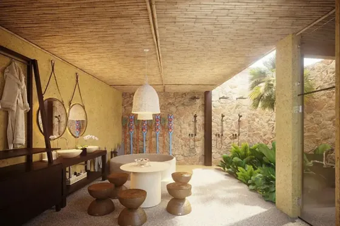
Hành lang vòm tre dẫn vào khu trị liệu
- 05
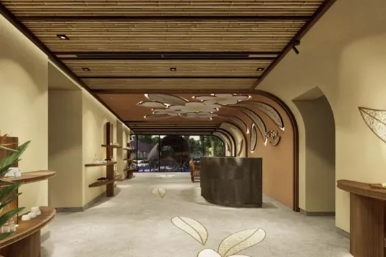
Phối cảnh phòng trị liệu đôi trong vòm tre
- 06
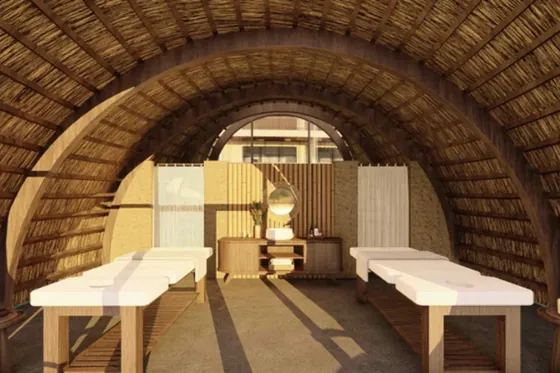
Khu bồn tắm ngoài trời
- 07
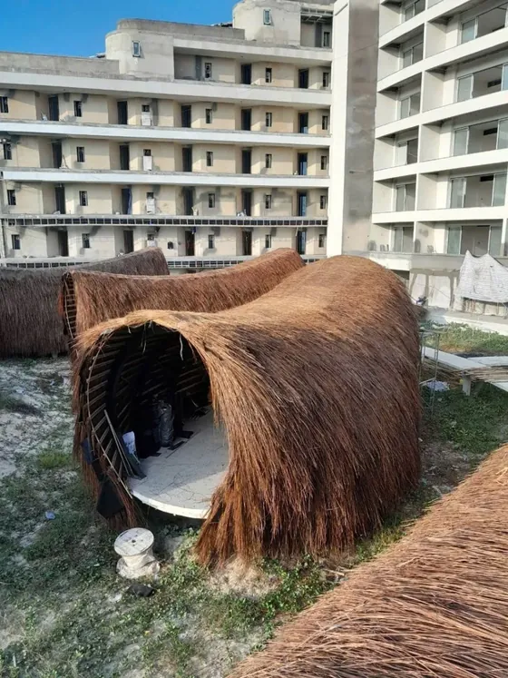
Dựng khung, phủ lá các kén tre tại công trình
- 08
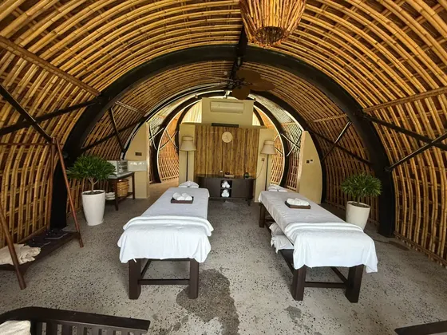
Phòng trị liệu vòm tre sau khi hoàn thiện
- 09

Sảnh spa với trần tre tầm vông thực tế
- 10

Quầy lễ tân dưới trần tre
Vì sao một resort cao cấp ven biển chọn tre tầm vông cho khu spa?
- Hợp khí hậu ven biển: tre tầm vông được xử lý đủ thời gian, đúng kỹ thuật sẽ chịu ẩm tốt, hạn chế cong vênh khi nhiệt độ thay đổi và kháng mối mọt hiệu quả.
- Tạo cảm giác "thiền": sắc vàng ấm của tre giúp ánh sáng lan tỏa dịu nhẹ, kết hợp mặt nước và cây xanh tạo nên không gian tĩnh tại.
- Cách âm, làm mát tự nhiên: cấu trúc ống của tre giúp giảm tiếng vọng, giữ phòng trị liệu yên tĩnh, thoáng và mát.
Quy Trình Thi Công Nhà Tre Tầm Vông Uốn Cong
Một công trình tre uốn cong đẹp và bền phải đi qua đủ các bước, từ bản vẽ đến khi bàn giao:
-
01Bước 1
Tư vấn và khảo sát mặt bằng
Nắm rõ mục đích sử dụng (quán cafe, nhà hàng, spa), ngân sách và phong cách mong muốn. Khảo sát hướng gió biển, hướng nắng, nền đất và lối vận chuyển vật tư.
Khảo sát tận nơi -
02Bước 2
Lên phối cảnh và tính kết cấu
Dựng phối cảnh 3D để khách hình dung không gian, chọn kiểu kết cấu (khung, vì kèo, đan lưới, hỗn hợp) và tính bán kính uốn, khoảng vượt, điểm neo cho từng vòm.
Duyệt phối cảnh trước khi thi công -
03Bước 3
Chọn và xử lý tre tầm vông tại xưởng
Tuyển tre đủ tuổi, thẳng, đều kích thước. Tre được hấp sấy, xử lý chống mối mọt, hong khô tự nhiên rồi mới chuyển đến công trình. Xem chi tiết 7 bước xử lý tre tầm vông.
Tre đã xử lý chống mối mọt -
04Bước 4
Uốn tre, ghép khung và lắp dựng
Uốn tầm vông theo bán kính đã tính, bó cột và ghép sẵn từng khung vì trên mặt đất, sau đó mới lắp dựng. Mỗi mối nối, điểm bắt khung được xử lý tỉ mỉ để vòm vừa chắc vừa giữ được đường cong mềm mại.
Khung vòm chịu lực -
05Bước 5
Lợp mái, ốp trần, hoàn thiện và bàn giao
Lợp lá, ốp trần tre, lắp đèn và phủ lớp bảo vệ bề mặt bằng dầu thực vật. Nghiệm thu cùng khách, hướng dẫn bảo dưỡng và bảo hành theo hợp đồng.
Bàn giao, bảo hành dài hạn
Thời gian thi công phụ thuộc quy mô và độ phức tạp của vòm. Tre Việt Building sẽ báo tiến độ cụ thể sau khi chốt phối cảnh.
Mẫu Quán Cafe, Nhà Hàng Tre Uốn Cong Cho Nha Trang
Nha Trang nắng nhiều, gió biển mạnh, khách du lịch đông quanh năm. Một quán cafe tre uốn cong vừa mát, vừa "lên hình" đẹp là lợi thế lớn để giữ chân khách. Dưới đây là các mẫu Tre Việt Building có thể thi công:
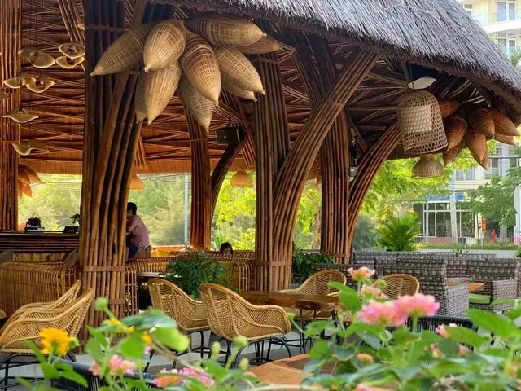
Quán cafe sân vườn cột tre tán cây
Các bó tầm vông được uốn tỏa ra từ chân cột như tán cây, đỡ mái lá dày phía trên. Không gian mở bốn phía đón gió biển, kết hợp ghế mây, đèn tre và cây xanh tạo cảm giác như ngồi dưới một rặng cây lớn.
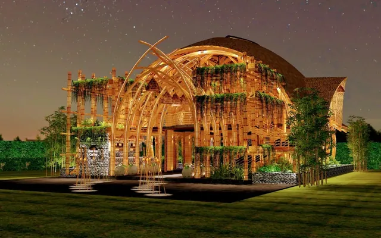
Nhà hàng mái vòm tre uốn cong
Khung vòm lớn bằng tầm vông, mái lá phủ kín, mặt tiền là những vòm tre đan xen dây leo. Buổi tối, ánh đèn vàng xuyên qua khung tre biến cả công trình thành một điểm nhấn từ xa.
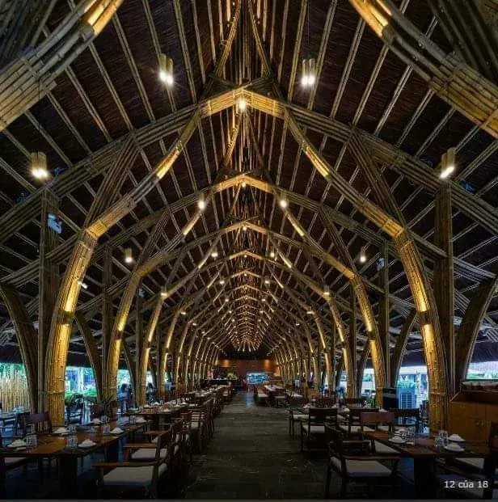
Hội trường, nhà hàng vì kèo tre
Kết cấu khung lặp lại: các vì kèo tre uốn cong nối tiếp nhau thành một đường hầm vòm dài. Phù hợp không gian rộng cần sức chứa lớn như nhà hàng tiệc, hội trường, khu ẩm thực.
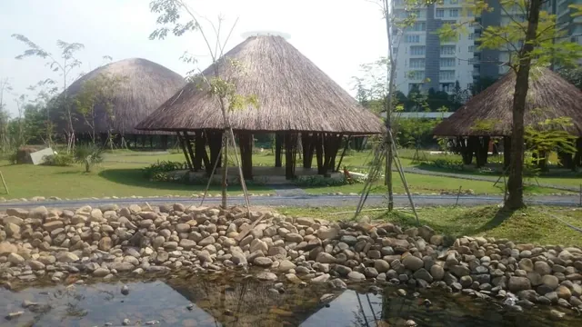
Chòi tre mái lá tròn bên hồ
Cụm chòi mái tròn với cột tầm vông uốn tỏa, đặt bên hồ hoặc sân cỏ. Mỗi chòi là một bàn riêng tư cho khách, dễ mở rộng thêm theo nhu cầu kinh doanh.
Công Trình Tre Việt Building Tại Khánh Hòa
Ngoài quán cafe và khu spa, Tre Việt Building đã thi công nhiều hạng mục tre cho hệ thống Amiana tại Nha Trang và Cam Ranh:
-
2021
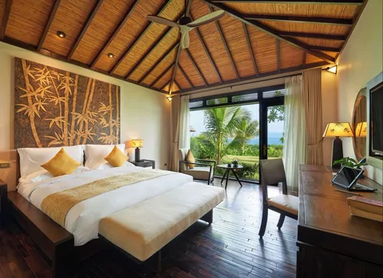
Amiana Nha Trang
Resort ven vịnh Nha Trang. Trần tre đan trong các villa giúp phòng nghỉ mát và gần gũi thiên nhiên, cửa kính mở thẳng ra vườn và biển.
Đã sử dụng 5 năm
-
2025
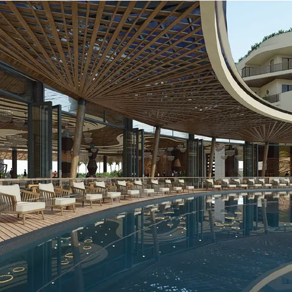
Amiana Cam Ranh
Ốp trần tre tầm vông cho khu hồ bơi của resort. Giàn tre vừa tạo bóng mát vừa là điểm nhấn kiến trúc khi nhìn từ hồ bơi.
Công trình mới nhất, cùng quy trình xử lý tre
Chi Phí Tham Khảo Thi Công Tre Tầm Vông
Chi phí thực tế phụ thuộc vào độ phức tạp của thiết kế, diện tích, kiểu kết cấu, yêu cầu kỹ thuật và mức độ xử lý vật liệu. Bảng giá tham khảo cho hạng mục ốp trần tre tầm vông tại Tre Việt Building:
| Hạng mục thi công | Đơn giá (VNĐ/m²) | Mô tả |
|---|---|---|
| Ốp trần tre nguyên cây | 450.000 – 600.000 | Phù hợp trần phẳng, bố cục truyền thống |
| Ốp tre chẻ đôi, kiểu lượn sóng | 550.000 – 800.000 | Dành cho thiết kế nghệ thuật, tạo hình 3D |
| Trần tre phối khung sắt, đèn âm | 750.000 – 1.200.000 | Thi công trần độc bản, theo mẫu riêng |
Báo giá trên đã gồm vật tư, nhân công, vận chuyển và hoàn thiện, chỉ mang tính tham khảo. Với nhà tre uốn cong nguyên căn (khung vòm, mái lá), chi phí được tính theo phối cảnh và quy mô cụ thể sau khi khảo sát. Xem thêm báo giá ốp trần tre tầm vông.
Câu Hỏi Thường Gặp
1Tre tầm vông uốn cong có chắc chắn không?
Có, nếu tre được chọn đủ tuổi, xử lý đúng kỹ thuật và kết cấu được tính toán trước. Tầm vông cứng và dẻo dai nên giữ được hình vòm mà vẫn chịu lực tốt. Mỗi mối nối, điểm bắt khung đều được xử lý tỉ mỉ để vòm bền theo thời gian.
2Công trình tre đặt sát biển Nha Trang có bị ẩm mốc, mối mọt không?
Tre tại Tre Việt Building được hấp sấy, xử lý chống mối mọt và hong khô tự nhiên trước khi thi công, sau đó phủ lớp bảo vệ bề mặt. Kết hợp thiết kế mái che mưa và chân cột cách đất, công trình chịu tốt độ ẩm ven biển. Công trình tại Amiana Nha Trang đã sử dụng 5 năm.
3Nhà tre uốn cong phù hợp với loại hình kinh doanh nào?
Phù hợp nhất với quán cafe, nhà hàng, spa, homestay, resort và khu du lịch, những nơi cần không gian đẹp, thoáng mát và tạo dấu ấn riêng cho khách.
4Tre Việt Building có nhận thi công ở Nha Trang, Cam Ranh không?
Có. Khánh Hòa là một trong những khu vực phục vụ trọng điểm của Tre Việt Building, cùng với TP.HCM, Đồng Nai và Lâm Đồng. Chúng tôi đã thi công nhiều hạng mục tre cho Amiana Nha Trang và Amiana Cam Ranh.
5Có được xem phối cảnh trước khi thi công không?
Có. Mỗi công trình đều được dựng phối cảnh để khách duyệt trước khi thi công, giống như dự án quán cafe và Spa Amiana. Thiết kế được cá nhân hóa theo kiến trúc, văn hóa địa phương và thương hiệu của từng dự án.
Nhận Tư Vấn & Báo Giá Miễn Phí
Nếu bạn đang ấp ủ một quán cafe tre uốn cong ở Nha Trang, một khu spa giữa hồ sen hay một nhà hàng mái vòm tre cho khu du lịch, hãy để Tre Việt Building cùng bạn biến ý tưởng thành công trình.
Nhận tư vấn & báo giá miễn phí
CÔNG TY TNHH TRE VIỆT BUILDING
Trụ sở917 Phạm Văn Đồng, Phường Linh Xuân, TP. Hồ Chí Minh
Nhà máy sản xuấtTổ 6, Ấp Phú Hợp, Xã Phú Lâm, Tỉnh Đồng Nai
Hotline/Zalo087.6915.999
Emailtreviet23@gmail.com
Websitetretruc.com.vn